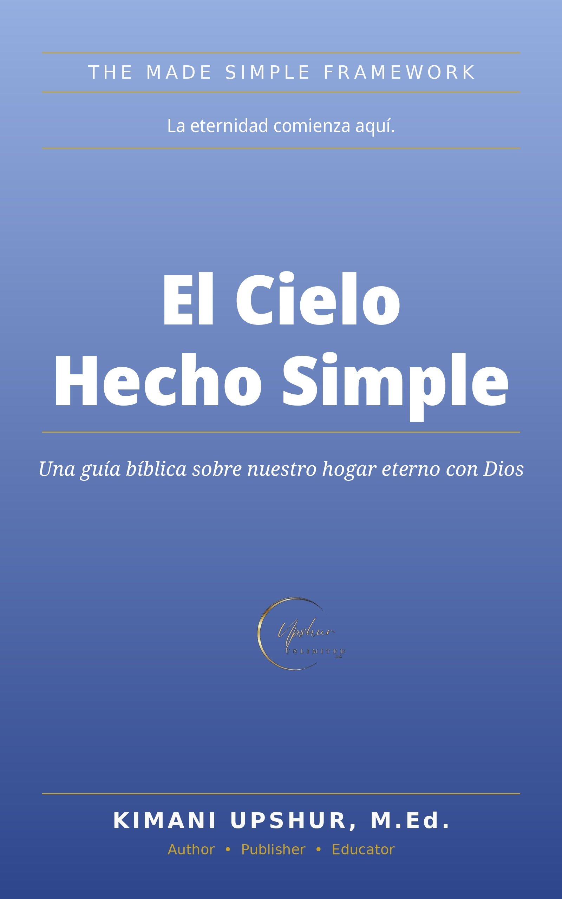

El Cielo Hecho Simple
Una guía bíblica sobre nuestro hogar eterno con Dios
por Kimani Upshur, M.Ed.
¿Prefieres la edición en inglés? Heaven Made Simple — read in English
Casi todo el mundo cree en el cielo, o al menos espera que sea real. Pero si alguien nos pidiera describirlo, a la mayoría se nos acabarían las palabras a los veinte segundos. Algo sobre nubes. Algo sobre que ya no hay dolor. Una esperanza vaga produce una vida vaga.
Este libro reemplaza la caricatura con el cuadro claro de la Biblia: el cielo es la morada de Dios — real, poblada y gloriosa — donde el Padre está en el trono, Jesucristo prepara un lugar para su pueblo y vuelve por él, y el Espíritu Santo ya vive en cada creyente como el anticipo del cielo.
En catorce capítulos sencillos y directos descubrirás:
- Qué es realmente el cielo y quién está en su centro
- Lo que la Biblia dice que el cielo es: la nueva Jerusalén, el río de la vida y el árbol de la vida
- No más lágrimas, no más muerte: la promesa de Apocalipsis 21:4
- Quiénes estarán allí y si nos conoceremos unos a otros
- Lo que haremos en el cielo: adorar, servir, reinar y descansar
- Las recompensas y el tribunal de Cristo
- La tierra nueva: el cielo descendiendo y la creación renovada
- Cómo el cielo cambia tu manera de vivir hoy
- Cómo estar seguro de que vas — y el camino a casa
Con citas de la Escritura tomadas de la Biblia Reina-Valera 1909 (RVR1909), un apéndice de catorce preguntas frecuentes y una oración de cierre. Incluye la invitación: «Una invitación personal: Entrega tu vida a Jesucristo».
Parte del Made Simple Through Christ Framework. Kimani Upshur, M.Ed. — Upshur Unlimited LLC.
Temas bíblicos del libro
Disponibilidad
Disponible ahora en Payhip y Apple Books. La edición de Google Play Books está en proceso; en cuanto esté activa, aquí aparecerá su enlace verificado.
- Editorial
- Upshur Unlimited LLC
- Autor
- Kimani Upshur, M.Ed.
- Formato
- Libro electrónico
- Idioma
- Español
- Marco
- Made Simple Through Christ Framework
- Capítulos
- 14
- Escritura
- Biblia Reina-Valera 1909 (RVR1909)
Más en español
El departamento de libros en español de Upshur Unlimited LLC seguirá creciendo con nuevas ediciones verificadas.